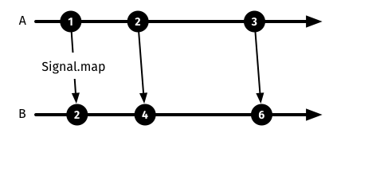

Introduction to signals
In Elm, signals are one of the basic building blocks for creating applications. You can think of a signal as a stream of values that change over time.
Signals can be merged, transformed and filtered.
Let's look at a basic signal:
module Main (..) where
import Html exposing (Html)
import Mouse
view : Int -> Html
view x =
Html.text (toString x)
main : Signal.Signal Html
main =
Signal.map view Mouse.x
https://github.com/sporto/elm-tutorial-assets/blob/master/code/020_signals/BasicMouse.elm
If you run this example in the browser you will see the changing x coordinate as you move your mouse.
On the first line we import the Html module from core for displaying the x coordinate as HTML.
On the second line we import the Mouse module from core. It provides utilities for working with the mouse.
view
view is a function that takes an integer and returns an HTML fragment (Int -> Html).
However, Html.text expects a string, so we must convert x to a string. This is done with the toString function.
main
An Elm application's main function can return a static element or a signal. In this case main returns a signal of Html (Signal.Signal Html). That is, the HTML output by this application can vary over time!
To understand how this is accomplished, let us deconstruct the last line of the program above (Signal.map view Mouse.x).
Mouse.x
Mouse.x gives us a signal of your mouse x coordinate as it changes. This signal has the signature Signal.Signal Int, meaning it is a signal that carries an integer.
Signal.map
Signal.map is a function that converts or maps one signal to a different signal.
Its type signature is Signal.map : (a -> result) -> Signal a -> Signal result.
- The first argument is a function that receives a value of type
aand outputs a value of typeresult. This function converts values from the source signal to values for the output signal. - The second argument to
Signal.mapis the source signal, i.e. the signal to be transformed. It has to be a signal of values of typea. - The output has the type
Signal result. That is, it is a signal of values of typeresult.

Diagram: We have a source signal A. Signal.map produces a second signal B. This second signal produces values that are the double of the original signal.
Going back to our example:
Signal.map view Mouse.x
In the example above, the view function is used as the transformation, or mapping, function. It takes an Int value and outputs Html.
The second argument (Mouse.x) is a signal of Int values.
The result is a signal of Html values, which is exactly what we want the main function to output.
Signal.map returns a new signal with the result of mapping the values of the source signal through the provided transformation function. As the source signal changes, each new value is transformed into, or mapped to, a value of the target signal type.
Here is another example of map:
double x =
x * 2
doubleSignal =
Signal.map double Mouse.x
double is a function that doubles its input values, i.e. doubleSignal is a signal that gives us the current mouse x coordinate multiplied by 2.
Exercise
Try combining the basic mouse x coordinate example above with doubleSignal so you see the current x multiplied by 2 as you move your mouse.